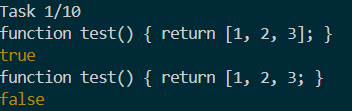
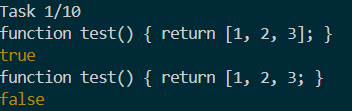
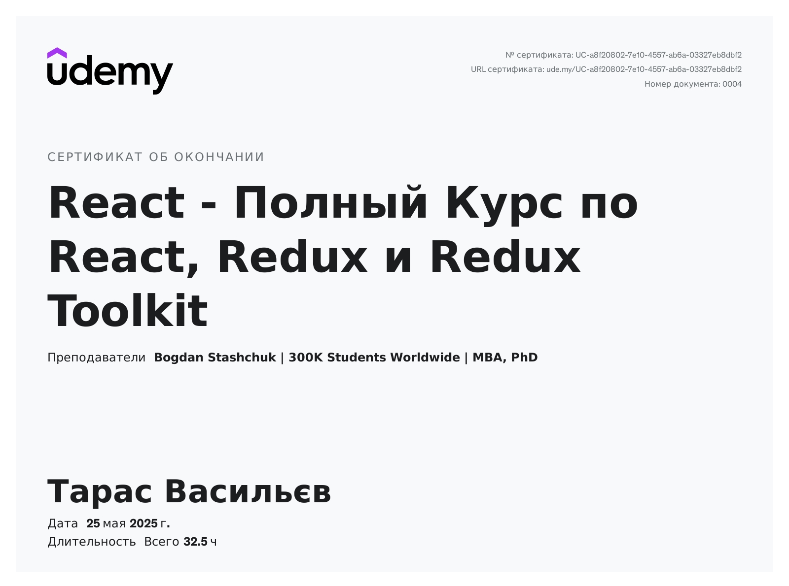

Тема, мета, місце розташування WEB-застосунка та місце звітного HTML-документу
Тема: ОБ'ЄКТ. МЕТОДИ ОБ'ЄКТА. МАСИВ ОБ'ЄКТІВ. ДЕСТРУКТУРИЗАЦІЯ ОБ'ЄКТІВ. CALLBACK. СТРІЛОЧНІ ФУНКЦІЇ. СТРІЛОЧНІ ФУНКЦІЇ ЯК КОЛБЕКИ. ПЕРЕБИРАЮЧІ МЕТОДИ МАСИВУ
Мета: Придбати практичні навички роботи з об'єктами. Методи об'єкта.. Callback. Стрілочні функції. Стрілочні функції як колбеки. Реалізація програм засовами мови JAVASCRIPT
Завдання 1
 

Завдання 2
Сертифікат
Це панель для демонстрації сертифіката.
